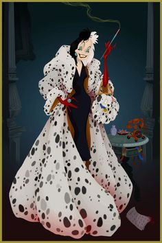
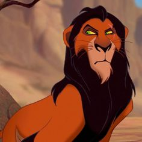
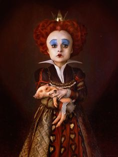

Bienvenidos a mi pagina web, de mis villanos favoritos!
Cruela de vil

Cruella de Vil es la malvada y excéntrica
villana de 101 dálmatas Es conocida por su obsesión
con las pieles de animales, especialmente con los cachorros de
dálmata,
que planea secuestrar para hacerse un abrigo de piel.
Scar

Scar es el traicionero tío de Simba en "El Rey León".
Motivado por la envidia y la ambición,
asesina a su hermano,Mufasa, para usurpar el trono de la Roca del
Rey,
sumiendo al reino en el caos y la desolación.
Reina de corazones

La Reina de Corazones es la temperamental y autoritaria
soberana del País de las Maravillas en
"Alicia en el País de las Maravillas". Es famosa por su lema
"¡Que le corten la cabeza!", que grita a la menor
provocación.